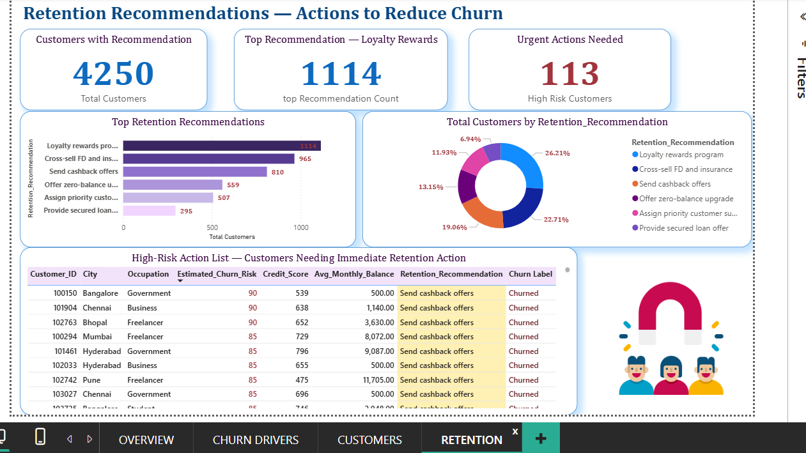
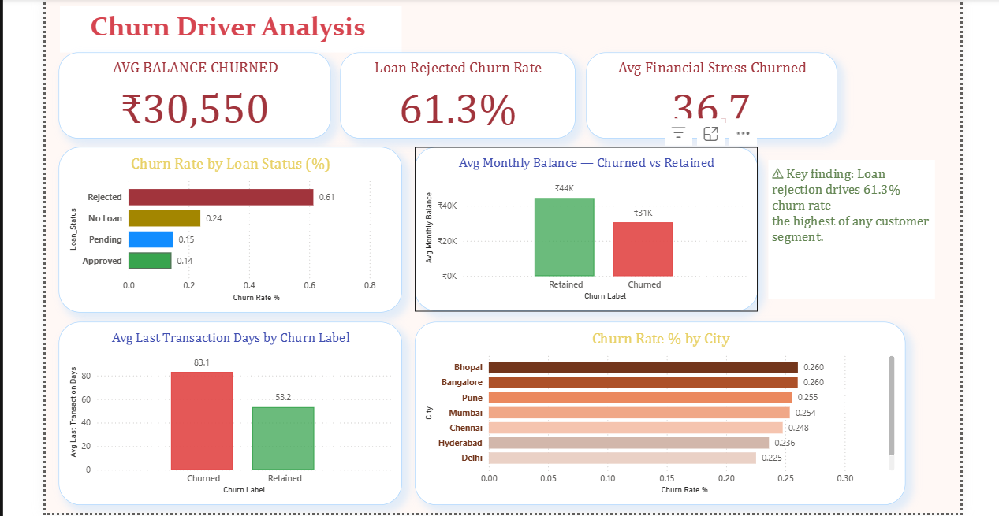
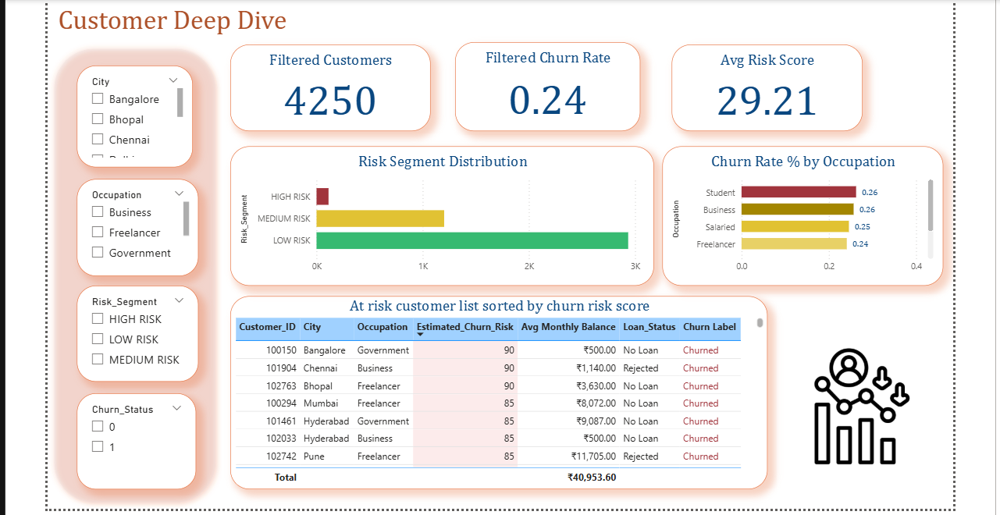
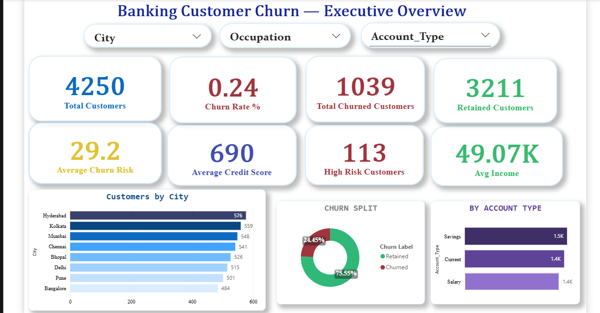
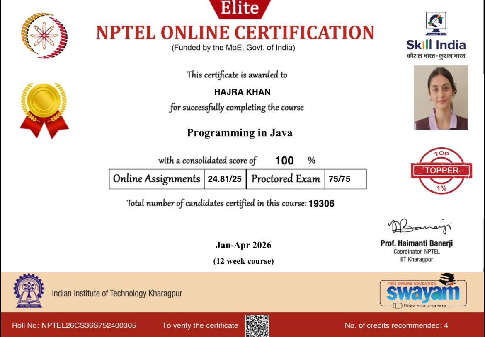
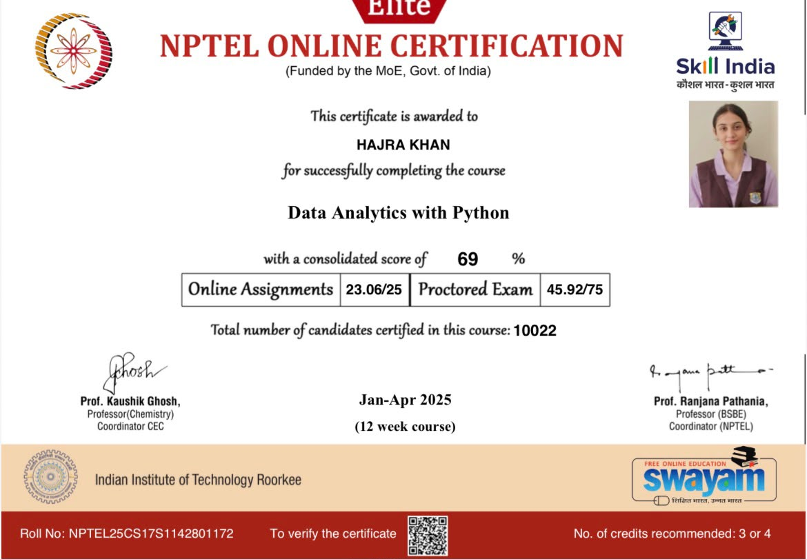
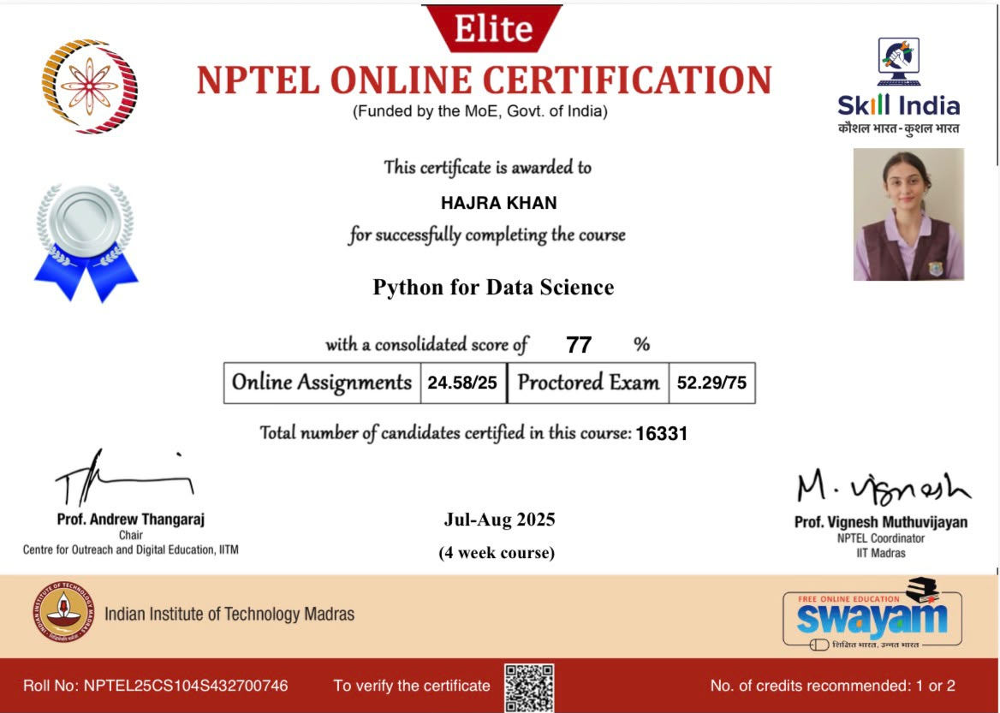
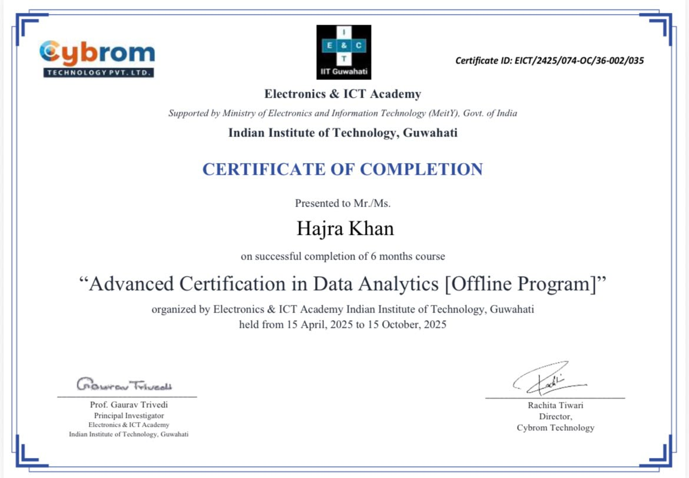

Hello, I'm
Passionate Data Analyst focused on transforming raw data into meaningful insights using Python, SQL, Power BI and Machine Learning. I enjoy solving business problems through analytics, dashboards and predictive models.
BCA student specializing in Data Analytics with AI. Skilled in Python, SQL, Power BI, Machine Learning, Pentaho ETL and business intelligence. Passionate about building end-to-end analytics solutions.
Who I Am
I'm Hajra Khan, currently pursuing Bachelor of Computer Applications (Data Analytics with AI) at The Bhopal School of Social Sciences.
I enjoy converting complex datasets into meaningful business insights. My interests include Business Intelligence, Data Visualization, Machine Learning, SQL Analytics and Dashboard Development.
I'm currently preparing for placements while building real-world analytics projects that combine Python, SQL, Power BI and ETL pipelines.
BCA (Data Analytics with AI)
Data Analyst Intern Cybrom Technologies
Analytics Dashboards Machine Learning SQL Power BI
The Bhopal School of Social Sciences
2024 - 2027Technologies I Work With
Data Analysis, Automation, Machine Learning
MySQL, PostgreSQL, Data Querying
Dashboards & Business Intelligence
Advanced Excel & Data Cleaning
Programming Fundamentals
Version Control & Collaboration
Scikit-Learn, Predictive Models
Data Integration & ETL Pipelines
Professional Journey
Internship Experience
Some of my best work
An end-to-end analytics project focused on identifying customers likely to leave a bank using ETL, SQL, Machine Learning and Power BI dashboards.
Banks lose revenue when valuable customers leave. This project predicts churn behaviour and identifies the factors responsible for customer attrition.




Performed SQL-based analysis on an e-commerce dataset to extract business insights, analyze sales trends, customer behavior, and product performance. The project demonstrates the use of SQL queries for data cleaning, aggregation, joins, and business reporting.
Professional Certifications & Continuous Learning

NPTEL Gold Medal • Score: 100/100

NPTEL Certification

Professional Certification
Professional Certification

Electronics & ICT Academy
I'm open to internships and opportunities.